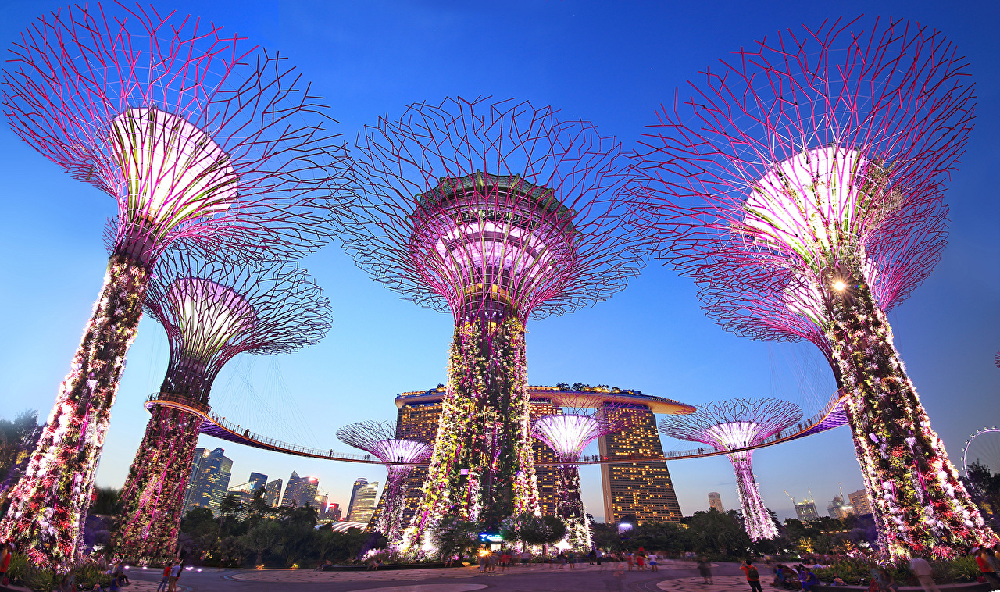
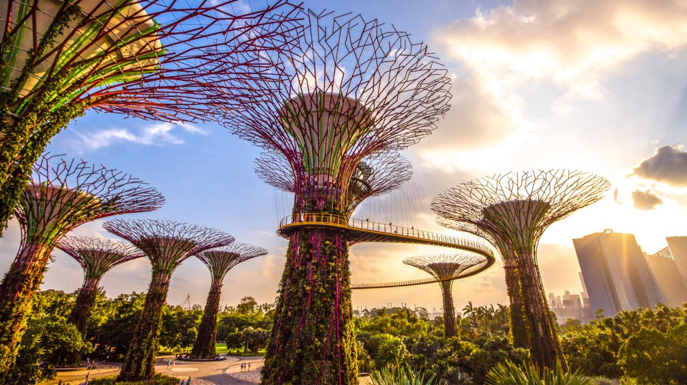
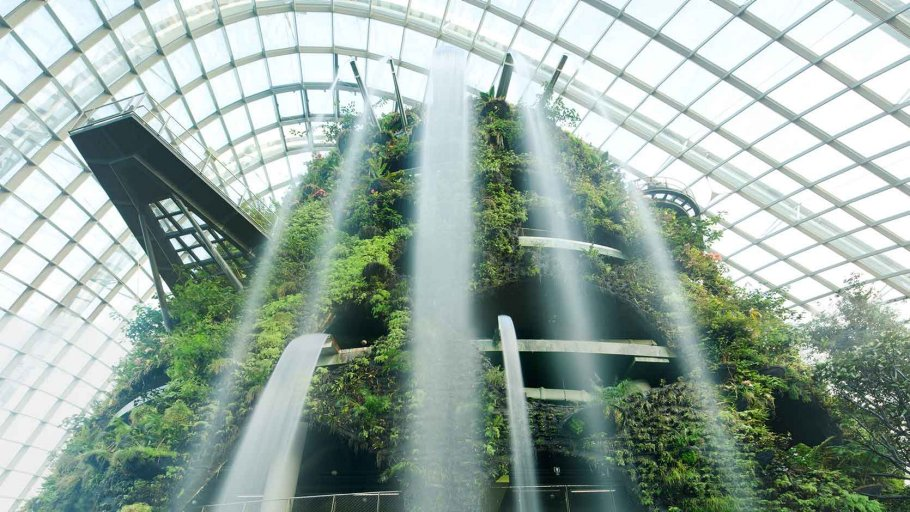
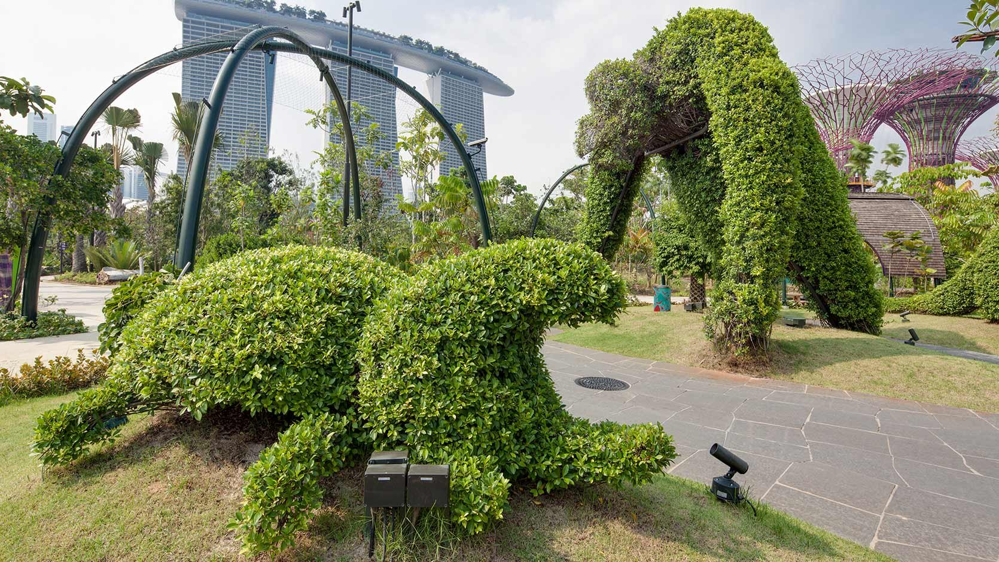

Gardens By the Bay Singapore
18 Marina Gardens Dr, Singapore 018953
Introduction
Gardens by the Bay brings to life the National Parks Board Singapore's vision of creating a City in a Garden. The Gardens captures the essence of Singapore as the premier tropical Garden City with the perfect environment in which to live and work - making Singapore a leading global city of the 21st century. A national garden and premier horticultural attraction for local and international visitors, Gardens by the Bay is a showpiece of horticulture and garden artistry that presents the plant kingdom in a whole new way, entertaining while educating visitors with plants seldom seen in this part of the world, ranging from species in cool, temperate climates to tropical forests and habitats. This is one of the most popular tourist attraction in Singapore; ranked 1st on Tripadvisor. Located close to the Marina Reservoir, the nature park covers 250 acres and is home to more than 1.5 million plants as well as creative displays.

Attractions
Flower Dome
Step into the Flower Dome and stand in awe of nature. Spectacular and innovative, it is
the largest glass greenhouse in the world as listed in the 2015 Guinness World Records!
Be amazed by changing display of flowers and plants from the Mediterranean and semi-arid regions.

Super Trees
Standing between 25 and 50 metres tall, Gardens by the Bay's Supertrees are designed with large canopies that provide shade in the day and come alive with an exhilarating display of lights and sounds at night.

Cloud Forest
Explore the tropical highlands amidst orchids, pitcher plants and ferns from the cool-moist Tropical Montane region. Be amazed as you encounter the world's tallest indoor waterfall at 30 metres and descend through the surreal mist-filled Cloud Walk and Treetop Walk.

World of Plants
Discover something new around every corner at the World of Plants. Venture into this realm of lush greenery and learn all about the spectacular myriad of tropical plants and the systems these plants support.

And many more !!
Click here to find out more
Adapted from: The Bay, G. B. (n.d.). Gardens By The Bay. Retrieved February 27, 2020, from https://www.gardensbythebay.com.sg/en.html